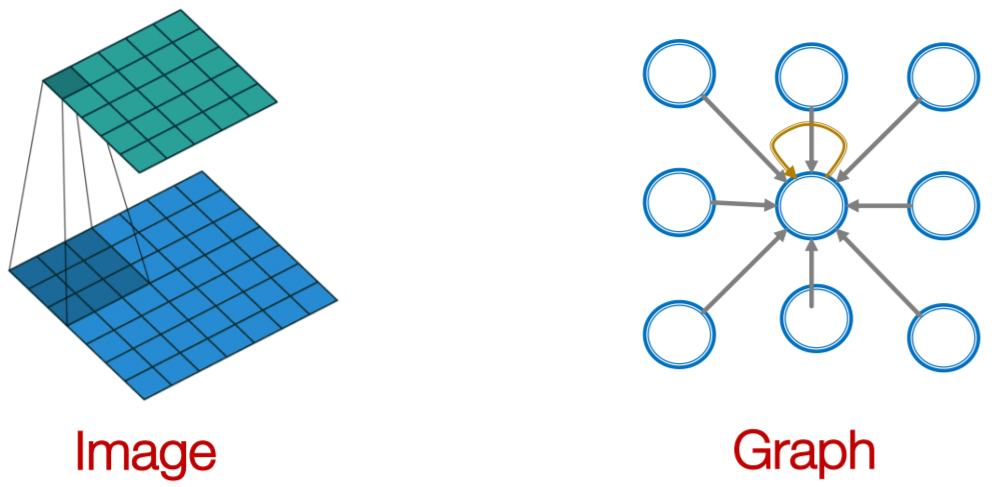
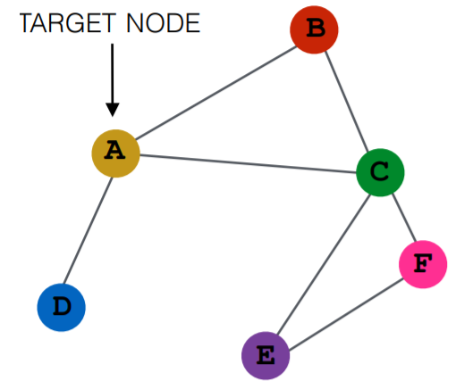
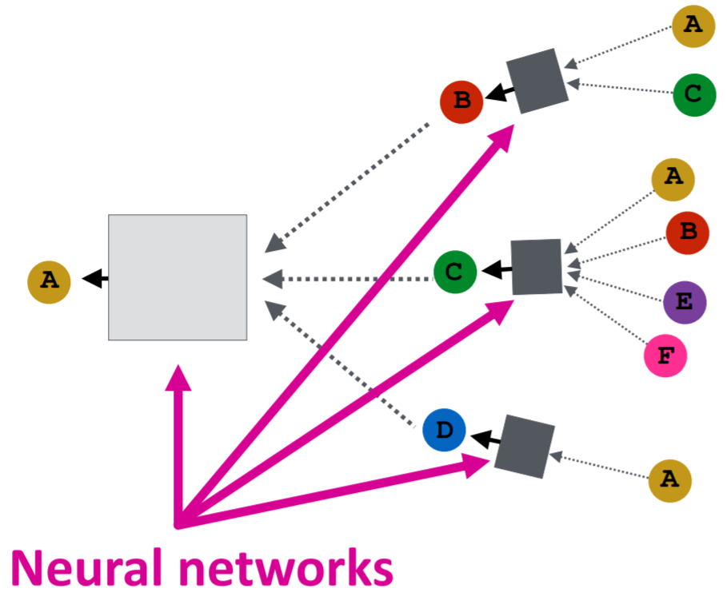
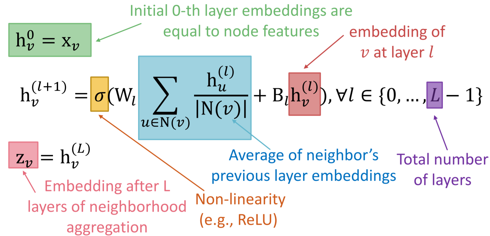
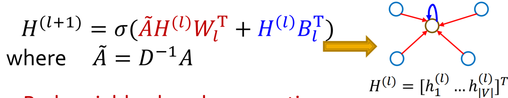
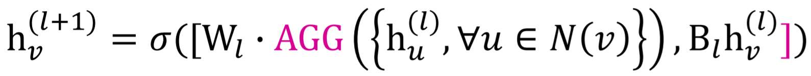
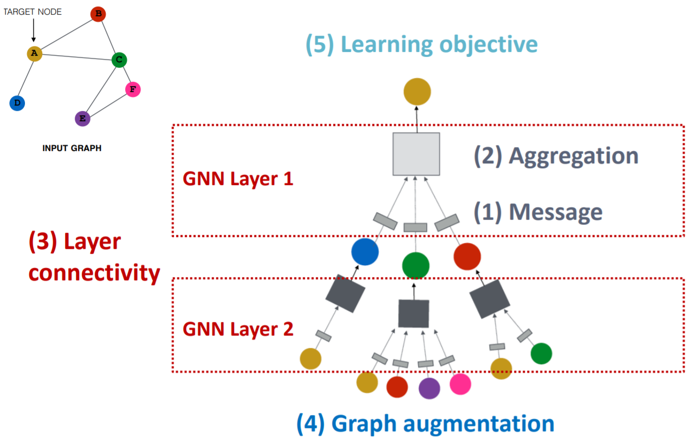
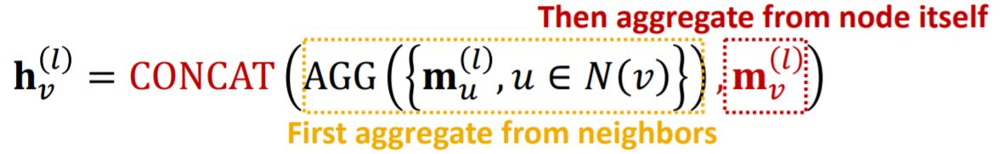
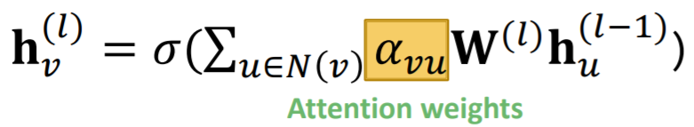

在这节课中我们将介绍图神经网络。
本文主要参考资料为CS224W的Lecture 6 & 7，课程视频可在Youtube观看。
Graph Neural Networks
Deep Learning for Graphs
首先假设我们有一个图$\mathcal{G}$，其邻接矩阵为$\mathbf{A}$，特征矩阵为$\mathbf{X}$。对于图中的节点$v$，用$\mathcal{N}_v$表示其邻居节点的集合。

图神经网络的思想是对于节点$v$，先对其邻居节点的特征向量进行一些滤波操作再将其结合。

对于一个给定的图，根据节点间的邻接关系，对于每一个节点我们都可以得到其对应的计算图

节点利用神经网络来聚合其邻居节点的信息，每经过一层神经网络，就能够聚合到更远一阶的邻居节点的信息。对于不同的网络来说，最主要的区别就在于如何聚合和处理不同节点的信息。
最基本的一种方法是对邻居节点的信息进行平均后再用神经网络进行处理

其中$W$和$B$是可训练的权重矩阵。该模型还可以用矩阵形式来表示

对于模型的训练，可以采取有监督或无监督。在无监督的情况下，可以利用图结构来作为监督信号，如之前介绍过的random walk等。
图神经网络是inductive的，参数是在所有节点间共享的，因此训练好的网络可以泛化到新的节点上。
GraphSAGE
上面介绍的方法是对邻居节点的信息进行平均，GraphSAGE将其推广到任意的能够将一组向量映射到一个向量的可微函数，比如平均、最大最小池化、LSTM等。

Design Space of Graph Neural Networks
一个general的GNN的框架包含五部分：信息的处理、聚合，不同层之间的连接，图的增广，及目标函数的设计。

GNN的一层：信息的处理与聚合
一层GNN包含信息的处理与聚合，根据不同的处理和聚合方式，有GCN,GraphSAGE,GAT等模型。
信息的处理可用函数$\mathbf{m}_{u}^{(l)}=\mathrm{MSG}^{(l)}\left(\mathbf{h}_{u}^{(l-1)}\right)$表示，如线性层$\mathbf{m}_{u}^{(l)}=\mathbf{W}^{(l)} \mathbf{h}_{u}^{(l-1)}$.
信息的聚合可用函数$\mathbf{h}_{v}^{(l)}=\operatorname{AGG}^{(l)}\left(\left\{\mathbf{m}_{u}^{(l)}, u \in N(v)\right\}\right)$表示。
然而以上的聚合函数会丢失掉节点本身的信息，因此通常还会对节点本身的信息进行一个信息的处理$\mathbf{m}_{v}^{(l)}=\mathbf{B}^{(l)} \mathbf{h}_{v}^{(l-1)}$并进行两步聚合

在GCN中，我们默认所有节点的邻居的重要性是一样的，为了区分不同邻居节点的重要性，提出了图注意网络GAT

其中$\boldsymbol{\alpha}_{v \boldsymbol{u}}$是可以通过学习得来的。首先定义一个注意力机制函数$a$用来计算节点$u$对$v$的重要性
之后用softmex对其标准化
得到注意力系数。
我们可以将$a$设置为一个线性层
注意力机制$a$中的参数可以与其他权重矩阵一起进行训练。为了稳定学习过程，还可以引入多头注意力机制。
在实际使用时，还可以加入其他深度学习常用的模块，如batch normalization, dropout, activation等。
GNN不同层之间的连接
将GNN的不同层一层一层堆叠起来会造成过平滑的问题，特别是在网络比较深的情况下。
为了防止过平滑的问题，可以采用浅层的GNN，但可以通过使用多层神经网络对信息进行处理或添加不传递信息的层来提高模型的表示能力。对于深层的GNN，可以采用跳跃连接来提高近端邻居信息的重要性。
图的增广
除了直接将原图用作计算图，我们还可以预先对图进行一些操作。比如对于缺少feature的图进行特征增广；对于过于稀疏的图添加虚拟节点或边；对于过于稠密的图在信息传递时进行采样；对于过大的图采样子图等。